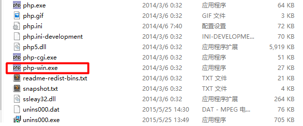
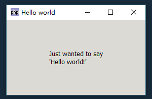
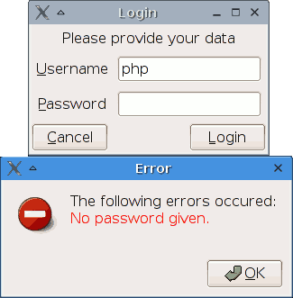

PHP-GTK初体验：用最简单的方式运行环境，并实现Hello World
首先用最简单的方式把php-gtk运行起来，在gtk扩展官网（http://gtk.php.net/ ）下载Binaries版本：
点击链接直接下载：http://gtk.php.net/distributions/PHP55-GTK2.zip （PHP-GTK-2.0.1 PHP 5.5）
官方文档提供了三种安装扩展的方式，
使用Gnope
手动安装
使用CVS编译
事实上我们在下载.zip压缩包后解压到任意文件夹下，不需要任何配置或者编译行为。（如果只是先体验一下GTK实现的GUI窗口）
一段简单的Hello World脚本
在任意目录下新建一个文件，后缀名为.phpw，比如hello.phpw，编辑文件，写入以下代码：
<?php
if (!class_exists('gtk')) {
die("Please load the php-gtk2 module in your php.ini\r\n");
}
$wnd = new GtkWindow();
$wnd->set_title('Hello world');
$wnd->connect_simple('destroy', array('gtk', 'main_quit'));
$lblHello = new GtkLabel("Just wanted to say\r\n'Hello world!'");
$wnd->add($lblHello);
$wnd->show_all();
Gtk::main();
?>保存后，右击文件>选择打开方式>其它应用>在这台电脑上浏览应用，选择我们下载并解压好的文件夹下的php-win.exe来执行文件，

就可以得到这样的运行结果：

检查PHP-GTK是否可用
if (!class_exists('gtk')) {
die("Please load the php-gtk2 module in your php.ini\r\n");
}这里我们通过检查gtk类是否存在来确定PHP-GTK是否可用。不像PHP 4和PHP-GTK 1，你不应该通过d1()尝试加载PHP-GTK模块，因为这在PHP 5中是过时的，不应该用于新代码的编写。所以我们打印一个信息，如果模块不可用，就由用户来启用它。
创建一个窗口
$wnd = new GtkWindow();
创建一个窗口就像实例化一个新的对象一样简单：变量$wnd得到了新对象的引用。如果你已经使用PHP 4和PHP-GTK 1，你可以在关键词new之前不使用&符号，因为在PHP 5中它会被自动创建。
设置窗口标题
$wnd->set_title('Hello world');为了使窗口在任务栏中更容易被认出，我们设置了标题，仅仅调用了对象的一个方法。
使关闭（操作）变得干净
$wnd->connect_simple('destroy', array('gtk', 'main_quit'));这是代码中第一段稍有意思的部分：参数'destory'传递到了静态方法Gtk::main_quit中。它告诉GTK当窗口被关闭或者销毁的时候退出主循环。（后面会提到关于主循环的内容）
创建一个展示文本的标签
$lblHello = new GtkLabel("Just wanted to say\r\n'Hello world!'");和上面一样，我们创建了一个新的部件。这次我们想要展示一小段文本，GtkLabel类可以完美的实现这个任务。
添加标签到窗口
$wnd->add($lblHello);
我们直接把标签添加到了窗口。
设置窗口为可见的
$wnd->show_all();
到现在，我们在屏幕上看不见任何内容。为了使窗口可见，必须调用show()方法，它将会使窗口可见，但不是标签——我们在标签之上（也就是窗口对象上）调用show()。如果你有多个控件比如按钮、复选框或者其它窗口部件不方便一一调用，可以使用show_all()方法来显示所有可见的部件。
开启主循环
Gtk::main();
在设置完所有配置项之后，我们需要确定窗口停留在打开状态并且会对用户的行为进行反馈。一段普通的PHP脚本在文件执行结束后会停止，因此需要启动GTK主循环。它会保持应用处于运行状态并且会回应用户事件。如果事件发生，它会执行相应的回调。
（原内容：http://gtk.php.net/manual/en/html/tutorials/tutorials.helloworld.html ）
更加先进的Hello World脚本
下面的参考内容会比上面的hello world脚本实现更多的功能。这里我们创建了一个登陆框，可以由用户来输入用户名和密码。当用户点击登陆，如果用户名或者密码为空，文本域可以检查错误并显示。

首先我们先创建一个窗口，设置标题并设置当窗口销毁停止主循环（上面已经实现过）：
$wnd = new GtkWindow();
$wnd->set_title('Login');
$wnd->connect_simple('destroy', array('gtk', 'main_quit'));接下来我们的任务是创建所有要显示的部件，先是两个文本域用户名和密码：
$txtUsername = new GtkEntry(); $txtPassword = new GtkEntry();
我们要分别给两个文本域一个描述的标签：
// 第二个参数意思是把下划线解析为下划线
$lblUsername = new GtkLabel('_Username', true);
$lblPassword = new GtkLabel('_Password', true);最后我们需要两个按钮，登录和取消：
$btnLogin = new GtkButton('_Login');
$btnCancel = new GtkButton('_Cancel');你可能注意到GtkLable类的构造函数中通过第二个参数设置解析下划线_为一个字符，但是GtkButton类中并没有，因为它会自动设置，这一点是需要记忆的。
现在标签需要知道哪个行为被激活时使用哪个相应的内容，这样来做：
$lblUsername->set_mnemonic_widget($txtUsername); $lblPassword->set_mnemonic_widget($txtPassword);
然后我们要决定哪个按钮被点击对应哪个事件。取消按钮会关闭窗口，结束程序，登录按钮会检查文本域是否为空等一系列操作：
$btnCancel->connect_simple('clicked', array($wnd, 'destroy'));
$btnLogin ->connect_simple('clicked', 'login', $wnd, $txtUsername, $txtPassword);我们把三个参数$wnd、$txtUsername和$txtPassword传递给了登录函数，接下来的操作会用它们从文本域获取值，并且在所有工作结束后关闭窗口。
现在我们创建了我们需要的所有按钮，它们被添加到了窗口。GtkWindow库是功能容器，它可以捆绑为一个单独的部件，所以我们需要这个容器来更好的展示我们的其它元素。这里决定使用GtkTabel，它可以保持标签在一列，紧随其后的是确定域：
$tbl = new GtkTable(3, 2); $tbl->attach($lblCredit, 0, 2, 0, 1); $tbl->attach($lblUsername, 0, 1, 1, 2); $tbl->attach($txtUsername, 1, 2, 1, 2); $tbl->attach($lblPassword, 0, 1, 2, 3); $tbl->attach($txtPassword, 1, 2, 2, 3);
（$lblCredit仅仅是一个消息标签），按钮有它们自己的GtkHButtonBox类，因为这个允许它们更美观的布局多个按钮：
$bbox = new GtkHButtonBox(); $bbox->set_layout(Gtk::BUTTONBOX_EDGE); $bbox->add($btnCancel); $bbox->add($btnLogin);
对于布局最后要做的事情是把表格和按钮添加到窗口。没有直接的方法，因为GtkWindow是一个GtkBin（类库？），只能包含一个部件。所以我们需要另外的容器，这次用GtkVBox：
$vbox = new GtkVBox(); $vbox->pack_start($tbl); $vbox->pack_start($bbox);
它们所有都需要显示：
$wnd->add($vbox); $wnd->show_all(); Gtk::main();
最后要做的事情，是当用户点击登陆按钮时候的回调事件。它需要检查用户名和密码是否为空，如果它们长度为0，则显示错误信息。如果一切ok，窗口将会关闭并且程序会继续运行来加载主窗口。
从部件获取文本很简单，我们用GtkEntry的get_text()方法就能实现：
$strUsername = $txtUsername->get_text(); $strPassword = $txtPassword->get_text();
检查工作可以用平常的php函数。如果发生错误就显示一个带有错误消息的信息。GtkMessageDialog来完成这些工作是理想的，它可以自动创建图标和按钮（确认，是或否）：
$dialog = new GtkMessageDialog($wnd, Gtk::DIALOG_MODAL, Gtk::MESSAGE_ERROR, Gtk::BUTTONS_OK, $errors);
$dialog->set_markup("The following errors occured:\r\n<span foreground='red'>" . $errors . "</span>");
$dialog->run();
$dialog->destroy();现在可以确定你把登录功能函数放到了主循环中并使其运行。
完整代码
<?php
/**
* Here we create a login window.
* It has a username and a password field, and a
* Cancel and Login button. Some error checking
* is being done when the user clicks "Login".
*/
if (!class_exists('gtk')) {
die("Please load the php-gtk2 module in your php.ini\r\n");
}
/**
* This function gets called as soon as the user
* clicks on the Login button.
*
* @param GtkWindow $wnd The login window, needed to close it
* when all is ok
* @param GtkEntry $txtUsername The username text field, used to get
* the username
* @param GtkEntry $txtPassword The password widget to retrieve the
* password
*/
function login(GtkWindow $wnd, GtkEntry $txtUsername, GtkEntry $txtPassword)
{
//fetch the values from the widgets into variables
$strUsername = $txtUsername->get_text();
$strPassword = $txtPassword->get_text();
//Do some error checking
$errors = null;
if (strlen($strUsername) == 0) {
$errors .= "Username is missing.\r\n";
}
if (strlen($strPassword) == 0) {
$errors .= "No password given.\r\n";
}
if ($errors !== null) {
//There was at least one error.
//We show a message box with the errors
$dialog = new GtkMessageDialog($wnd, Gtk::DIALOG_MODAL,
Gtk::MESSAGE_ERROR, Gtk::BUTTONS_OK, $errors);
$dialog->set_markup(
"The following errors occured:\r\n"
. "<span foreground='red'>" . $errors . "</span>"
);
$dialog->run();
$dialog->destroy();
} else {
//No error. You would need to hide the dialog now
//instead of destroying it (because when you destroy it,
//Gtk::main_quit() gets called) and show the main window
$wnd->destroy();
}
}
//Create the login window
$wnd = new GtkWindow();
$wnd->set_title('Login');
//Close the main loop when the window is destroyed
$wnd->connect_simple('destroy', array('gtk', 'main_quit'));
//Set up all the widgets we need
$lblCredit = new GtkLabel('Please provide your data');
//The second parameter says that the underscore should be parsed as underline
$lblUsername = new GtkLabel('_Username', true);
$lblPassword = new GtkLabel('_Password', true);
$txtUsername = new GtkEntry();
$txtPassword = new GtkEntry();
$btnLogin = new GtkButton('_Login');
$btnCancel = new GtkButton('_Cancel');
//Which widget should be activated when the
// mnemonic (Alt+U or Alt+P) is pressed?
$lblUsername->set_mnemonic_widget($txtUsername);
$lblPassword->set_mnemonic_widget($txtPassword);
//Hide the password
//$txtPassword->set_invisible_char('*');
//Destroy the window when the user clicks Cancel
$btnCancel->connect_simple('clicked', array($wnd, 'destroy'));
//Call the login function when the user clicks on Login
$btnLogin->connect_simple('clicked', 'login', $wnd, $txtUsername, $txtPassword);
//Lay out all the widgets in the table
$tbl = new GtkTable(3, 2);
$tbl->attach($lblCredit, 0, 2, 0, 1);
$tbl->attach($lblUsername, 0, 1, 1, 2);
$tbl->attach($txtUsername, 1, 2, 1, 2);
$tbl->attach($lblPassword, 0, 1, 2, 3);
$tbl->attach($txtPassword, 1, 2, 2, 3);
//Add the buttons to a button box
$bbox = new GtkHButtonBox();
$bbox->set_layout(Gtk::BUTTONBOX_EDGE);
$bbox->add($btnCancel);
$bbox->add($btnLogin);
//Add the table and the button box to a vbox
$vbox = new GtkVBox();
$vbox->pack_start($tbl);
$vbox->pack_start($bbox);
//Add the vbox to the window
$wnd->add($vbox);
//Show all widgets
$wnd->show_all();
//Start the main loop
Gtk::main();
?>（原内容：http://gtk.php.net/manual/en/html/tutorials/tutorials.helloadvanced.html）
The End.